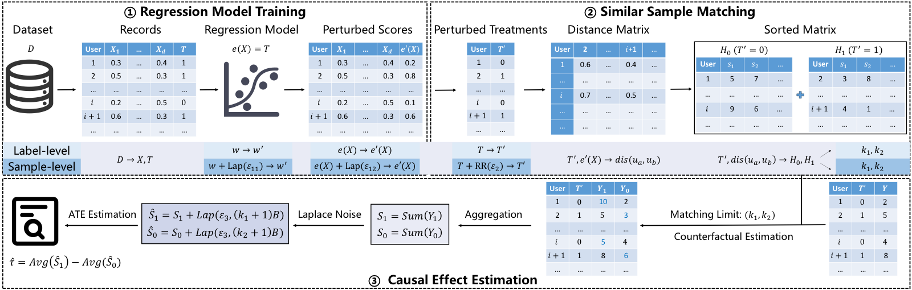

PrivATE: Differentially Private Average Treatment Effect Estimation for Observational Data
NDSS 2026

Abstract
Causal inference plays a crucial role in scientific research across multiple disciplines. Estimating causal effects, particularly the average treatment effect (ATE), from observational data has garnered significant attention. However, computing the ATE from real-world observational data poses substantial privacy risks to users. Differential privacy, which offers strict theoretical guarantees, has emerged as a standard approach for privacy-preserving data analysis. However, existing differentially private ATE estimation works rely on specific assumptions, provide limited privacy protection, or fail to offer comprehensive information protection. To this end, we introduce PrivATE, a practical ATE estimation framework that ensures differential privacy. In fact, various scenarios require varying levels of privacy protection. For example, only test scores are generally sensitive information in education evaluation, while all types of medical record data are usually private. To accommodate different privacy requirements, we design two levels (i.e., label-level and sample-level) of privacy protection in PrivATE. By deriving an adaptive matching limit, PrivATE effectively balances noise-induced error and matching error, leading to a more accurate estimate of ATE. Our evaluation validates the effectiveness of PrivATE. PrivATE outperforms the baselines on all datasets and privacy budgets.
Resources
Citation
@inproceedings{YLDCSGHCZ26,
author = {Quan Yuan and Xiaochen Li and Linkang Du and Min Chen and Mingyang Sun and Yunjun Gao and Shibo He and Jiming Chen and Zhikun Zhang},
title = {{PrivATE: Differentially Private Average Treatment Effect Estimation for Observational Data}},
booktitle = {{NDSS}},
publisher = {Internet Society},
year = {2026},
}